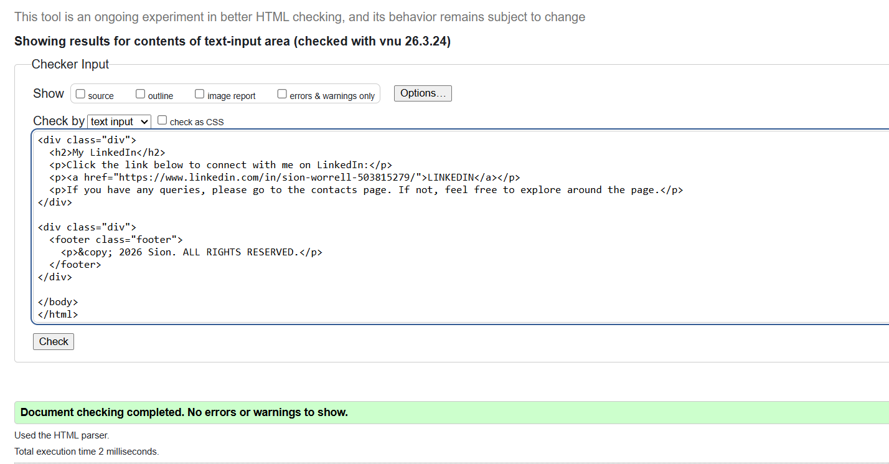
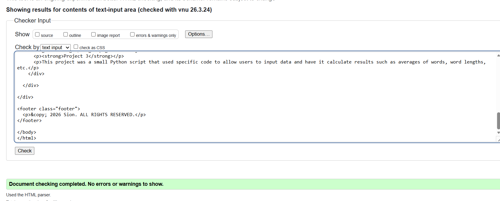
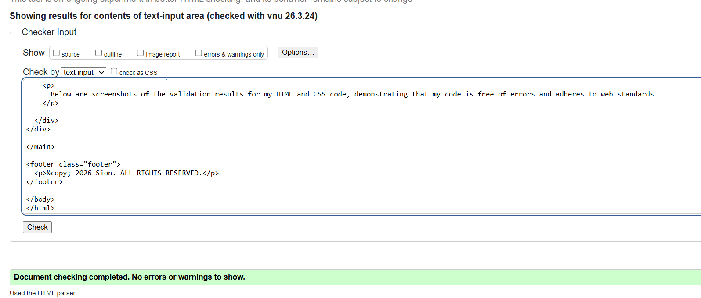
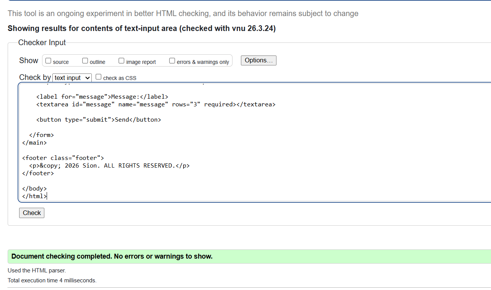
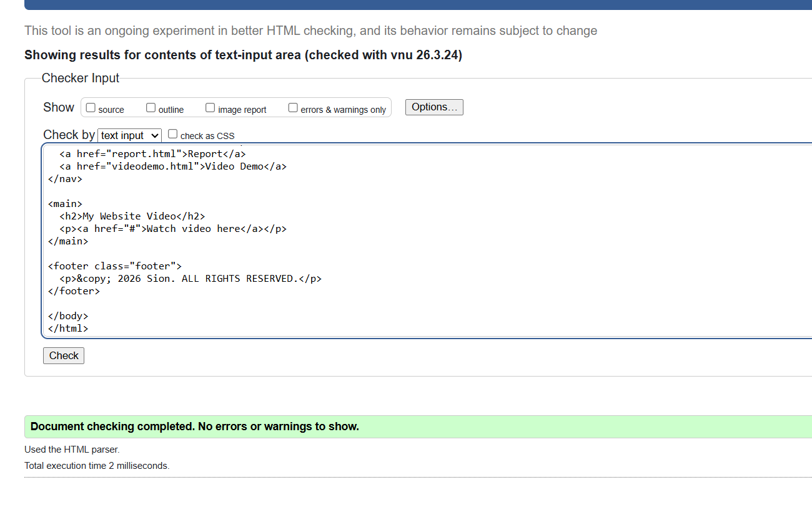
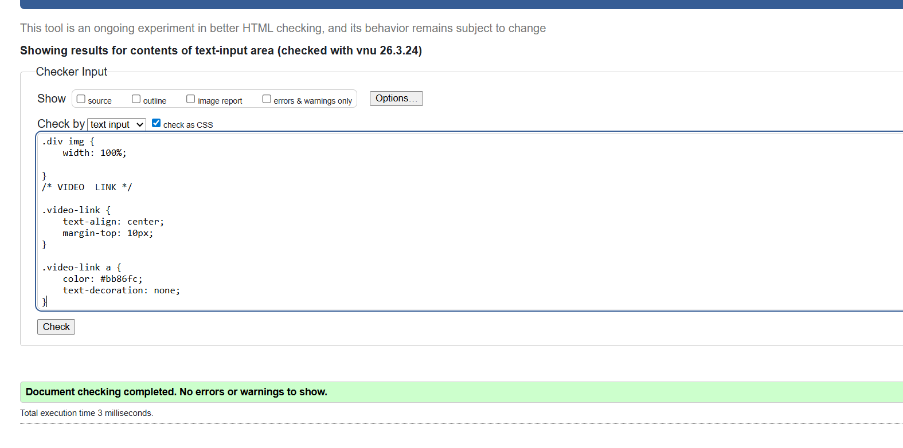

My Website Development Report
1. Introduction
In my report I have designed and developed a personal portfolio website, the purpose of the website is to present my personal abilities within my current field, demonstrate web development skills, and provide a platform where users can explore projects and make contact with me if they have any queries. The website was developed using HTML for structure and CSS for styling. The aim was for it to be simple, clear, and easy to navigate ensuring a positive user experience.
2. Design
Before development began, I carefully planned the structure and layout of the website to ensure clarity and usability. My main goal was to create a clean and professional portfolio that is easy to navigate. I chose a multi-page layout to separate content into clear sections such as Home, Contact, Projects, Report, and Video Demo, making the site more organised and user-friendly. To maintain consistency and provide easy access across all pages, I placed a navigation bar at the top of every page. On the home page, I used a card-based layout to organise content into clear, readable sections, helping users quickly understand the information presented. On the projects page, I implemented a grid layout to display my work in a structured and visually balanced way, allowing multiple projects to be viewed at once while keeping the design clean and easy to follow. Overall, I adopted a simple and minimal design approach to avoid bunching of information and improve readability, ensuring a smooth and effective user experience.
3. Development
For styling, I linked an external stylesheet (style.css) to all pages to ensure consistency across the entire website. I used CSS to style the overall layout, create card components for organising content, and improve spacing and readability. I also adjusted font sizes, colours, and alignment to create a clean and professional appearance. Additionally, I ensured that the design remained simple and responsive so that it works well across different screen sizes, providing a smooth and user-friendly experience. I developed the website using HTML and CSS. For the HTML, I maintained a consistent structure across all pages by using elements such as header for titles, nav for navigation links, and div or main for the main content sections. This helped keep the layout organised and easy to follow. On the home page, I included a welcome message, a short introduction, and clear instructions to guide users through the website. The contact page features a form with input fields for the user’s name, email, and message, along with a submit button that uses a mailto action, allowing users to easily get in touch.
4. Testing
When creating my web pages, I carried out testing to ensure the website worked correctly. I tested the site by opening it in a web browser to check the layout and overall functionality, as well as testing the navigation links between pages to make sure they worked properly. I also checked the behaviour of the contact form and verified that file paths and the overall structure were correct. The results showed that navigation between existing pages worked correctly, the layout displayed as expected when the CSS was applied, and the contact form successfully opened an email client when supported.
5. Problems and Solutions
During the development of my website I came across a few problems. One of those problems was that the CSS file was missing from the folder, which meant that the website was not displaying as intended and was just showing the HTML text without the styling that I had created for the background. Thankfully, I went over my code and ensured that the style.css file was linked in the same folder as my HTML pages, which enabled the website to display as intended. Another problem was the navigation links; at first I didn’t understand how to link pages. After some research I figured out how to link pages which allowed users to navigate around the website and view all the different pages that I had created. My final and biggest problem was case sensitivity on GitHub. This was a big issue for me as my images were not showing on the project page. After some research I found out that GitHub is case sensitive and that the file paths had to match the file names exactly. After changing the file paths to match the file names, my images were able to show on the project page and display as intended.
6. Improvements and Conclusion
Overall, I am satisfied with the development of my personal portfolio website. However, there are some improvements I would have worked on which would have improved the website, such as mobile responsiveness (as the website I created was mainly designed for laptop users) and visual design with advanced CSS techniques. With time, these can all be attainable. On the other hand, this website effectively showcases my skills and projects while providing a user-friendly experience. The design is clean and professional, and the navigation is intuitive, allowing users to easily explore the content. Through this project, I have gained valuable experience in web development using HTML and CSS, and I am proud of the final result that I have achieved.
7. Validation Screenshots
Below are screenshots of the validation results for my HTML and CSS code, demonstrating that my code is free of errors and adheres to web standards.

Image 1 Validation for Home page

Image 2 Validation for projects page

Image 3 Validation for reports page

Image 4 Validation for contact page

Image 5 Validation for video demo page

Image 6 Validation for CSS file